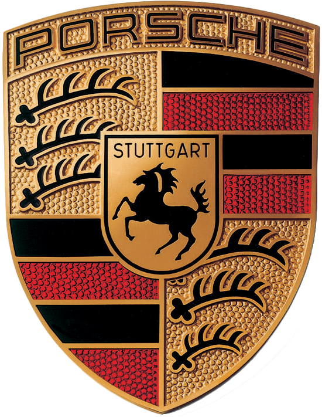

Porsche.
Porsche AG is a German luxury carmaker, founded in the 1930s by Ferdinand Porsche, originally known for developing the Volkswagen Beetle. After World War II, Ferdinand's son, Ferry Porsche, introduced the company's first car, the Porsche 356. Today, Porsche, owned by Volkswagen AG, offers models like the 718, 911, Panamera, Macan, Cayenne, and Taycan.
911.
As Porsche's business grew, the launch of the 1964 "Type 901" at the Paris Motor Show marked the end of the company's earlier numbering system. However, Peugeot held the legal rights to three-digit numbers with a zero in the middle, prompting Porsche to quickly rename the car to "911," thus creating an iconic model. Over the years, other models like the 924, 928, and 944 followed, establishing the "9" as a hallmark of Porsche's sporting character.

718.
The 911 model range is not the only numbered model in today’s Porsche line-up, of course. The 718 range comprises of the Boxster, Cayman and, yes, the Spyder. Its significance harks back to the legendary 718 mid-engine, four-cylinder racecar that first made its appearance at the 1957 24 Hours of Le Mans. Nowadays, the 718 is a mid-engine roadster that take the sporting spirit of that racing icon and transfers it to the roads of today.
Cayenne.
This unmistakable SUV powerhouse packs intense performance and precise dynamics – in other words just the kind of vehicle deserving of a name with a bit of a kick to it. When the Cayenne debuted in 2002 it became, at the time, the third model in the Porsche product line-up alongside the 911 and the Boxster. The name itself derives from the piquant cayenne pepper – a bold and relevant choice for this intrepid traveller with a fiery nature.
Macan.
When the Macan went on sale in 2015, people were immediately left scratching their heads about the provenance of the model’s name… unless you spoke Javanese, that is. The name comes from the language’s word for the Indonesian tiger and acknowledges the fierceness that lies beneath the car’s elegant exterior. The lively nature of the Macan is the reason why that today it’s universally considered the sportiest of compact SUVs.
Panamera.
It’s fair to say that Porsche owes a great debt to the legacy of the Carrera Panamericana, however short lived the now infamous race was. Besides the Carrera name we now associate with the 911, it’s also from where the Panamera got its name. The race, which was held in its original form between 1950 and 1954, was about endurance, speed and reliability – attributes you could easily describe this car with.
Taycan.
Launched in 2019, Porsche's first all-electric vehicle was named "Taycan," a word of Turkic origin meaning "soul of a spirited young horse." The name embodies the car’s lively, agile, and tireless character, while also connecting to Porsche’s heritage through the reference to the horse in the brand's crest. Over time, the name has gained positive meanings in other languages, such as in Japanese, where "taikan" translates to "physical experience," reflecting the dynamic feeling of driving the Taycan.
- S = Sport, featuring a more powerful engine and enhanced equipment.
- T = Touring, a more basic and affordable entry-level model.
- 4 = All-wheel drive (AWD) models.
- GT = Gran Turismo, high-performance, track-focused models.
- RS = RennSport, road-legal cars derived from racing.
- Turbo = Models equipped with turbocharged engines for extra power.
- Targa = 911 model with a removable roof and roll-bar.
- Carrera = More powerful variant, synonymous with the 911 model.
- Boxster = A 2-seat convertible, combining a Boxer engine with a roadster design.
- Cayman = The hardtop, coupe version of the Boxster.
- Spyder = Lightweight, open-top mid-engine sports cars.
- Cabriolet = Convertible models with a folding roof.
- Executive = Longer-wheelbase version, offering more rear-seat space.
- E-Hybrid = Hybrid models combining electric motors with combustion engines.
Models 🚗
911 ℹ️